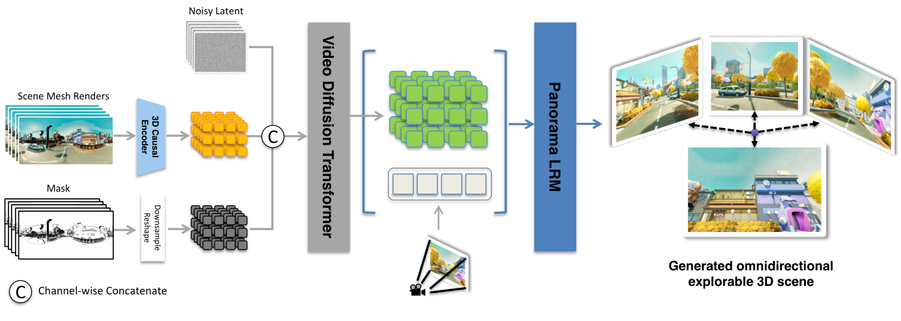
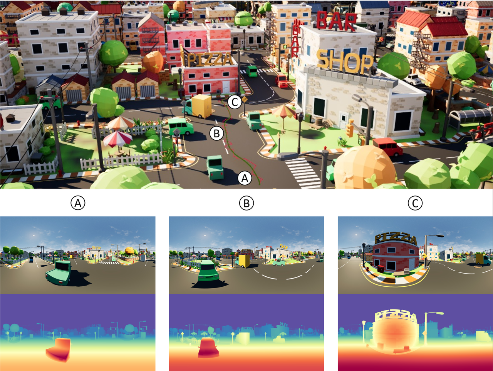
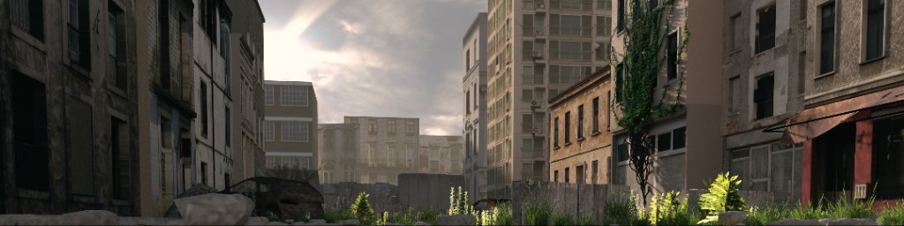
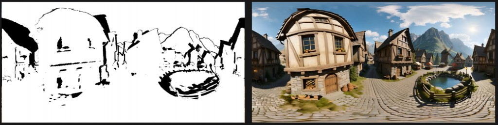

Phase 3 · Depends on P2 splat plumbing + P1 8K pano
WAN, 8K reprojection, multi-rail SfM
Native port of the Mickmumpitz dataset graph. Four drones, 720p hole-fill, 8K geometry composite. There is no camera count that produces a perfect scan.

01Locked facts
Source graph: docs/260825_MICKMUMPITZ_3DGS-Dataset-Creator_1-0_SMPL.json
(last_node 175, 77 nodes). Groups: SETUP, LOAD DIFFUSION MODELS, CAMERA PLOT 1–4, WAN INPAINT ×4, ADD TO DATASET.
- Quality: WAN 2.1 I2V 14B fp8 720p + LightX2V on RTX 3090 24GB. GGUF loader in the graph is for ≤16 GB cards, not this GPU.
- LoRA order from JSON links 1 → 2 → 4: UNET fp8 → pano LoRA 0.98 → LightX2V 1.0 →
ModelSamplingSD3shift 5. - Wan Conditioning widgets
[1440, 720, 81, 'black', False]= width, height, length,hole_fill,invert_mask. - KSampler stored steps widget is 4; linked STEPS = 8 (PrimitiveInt id 55). Seed 0, cfg 1,
euler,normal, denoise 1. - HiRes:
base_mode=geometry,output_width=8192, frames0-80/2(graph + node default).0-15,16-/8is an optional preset, not a silent substitute. - Four Plot Camera nodes; optional 5th via Add-to-dataset. Each rail owns
rail_json. - Empty
prompt.txt→ block WAN. Graph generic positive is not a silent replacement for the scene. - SageAttention / Triton-Windows: try; continue if missing. If Sage is on, apply the black-frame patch (vendor pin).
- Do not use SeedVR as the sharpness path. Sharpness is 8K geometry composite. Do not shell out to ComfyUI.
- Product never loads
ref-hires-mask-split.png(HTML dummy only). Live Generate split: left validity mask, right WAN fill (including low-res). Click a rail number to preview. - WAN then Confirm WAN → HiRes. HiRes does not auto-start. Reconstruct: Keep / Ditch / Re-gen WAN. After Reconstruct finishes, always the newest kept-rail sparse.
02How many camera sets
There is no count that produces a perfect scan. Extra rails do not raise per-view fidelity — every path reprojects the same MoGe depth. They buy explorable volume (SplatKit measured six paths reaching 1.12 from the anchor vs 0.80). Glass, mirrors, and depth silhouettes stay MoGe failures no matter how many drones you add. Shorter travel per rail plus more rails beats one long rail: 8K coverage decays as you leave the origin (garden example: 0.85 at frame 0 → 0.49 at frame 80).

| Case | Rails | Why | Source |
|---|---|---|---|
| P2 scout | 1 | Plumbing. Black holes OK. | P2 lock |
| Quality default | 4 | Graph CAMERA 1–4. Video: “usually more than enough.” Suggest-paths default 4. | JSON + transcript + path_suggest.py |
| Optional extra | +1 | Add-to-dataset node. HiRes auto_name=True. | JSON |
| Suggest-paths cap | ≤ 8 | suggest_paths clamps count to 8. | SplatKit |
| Hero (pond, statue) | 4, one of them look_at_target | Video: circle / aim at a pond. Graph camera 1. | Transcript + node 27 |
| High then descend | One crane-rise | Video extra-drone example. | Transcript + suggest |
| Corridor | push-in look_forward | Along the open azimuth, stay in clearance. | Suggest archetype 1 |
| Open garden / plaza | 4 short rails, not one long path | Coverage dies at the far end of a long rail. | HiRes known limits |
| Glass / mirrors | Do not add rails expecting a fix | Same wrong depth, more views. Water stays view-dependent after train. | HiRes + video pond |
Suggest-path archetypes (SplatKit, all start at the star)
| # | Label | Look | Motion |
|---|---|---|---|
| 1 | push-in | look_forward | S-dolly into the most open direction |
| 2 | arc-sweep | look_forward | Lateral S-arc while advancing |
| 3 | crane-rise | per_point_look | Rise while pushing in; aim on the wall ahead |
| 4 | pull-back | per_point_look | Retreat, hold aim forward (reveal) |
Quality default on first P3 open: copy the four SMPL knot sets (studio-garden demo), not a blank editor. Suggest paths is the “fit this room” button — same as SplatKit “✦ Suggest paths (all selected)”. Do not overwrite Confirm’d rails without asking.
SMPL demo rails (first knot always origin)
All length=81, moge_level=9.
Rail 0 node 27 · look_at_target -0.108, 0.073, 1.953
0.000, 0.000, 0.000 0.199, 0.219, 0.488 -0.184, -0.093, 0.920 -0.065, 0.039, 1.404
Rail 1 node 122 · per_point_look (6-float lines)
0.000, 0.000, 0.000, 0.386, 0.021, 1.085 0.430, 0.021, 0.843, 1.784, 0.043, 1.931 0.819, 0.043, -0.292, 2.525, 0.032, -0.347 0.808, 0.032, -1.413, 2.411, 0.021, -1.983
Rails 2–4 are in the markdown (nodes 133, 144, optional 157). Copy them; do not invent a fifth path schema.
03Geometry page in P3 (dummy)
Same Compute geometry chrome as Phase 2.
P3 adds four rail slots, Suggest paths, and optional Add rail.
moge_level is shared (graph uses 9 on every Plot Camera).
Votion 3DGS
geometryActive rail solid on FLOOR/SIDE; others dimmed. Star locked. Confirm gates Generate.

Active rail solid; others dimmed (dummy shows one rail). Star locked. Drag cameras 1–3 and the orange look-at. Play lives on the Preview flight pane.
Log
Four clips usually enough. Preview mesh flight before a 14B run.
Help
Four rails (+ optional 5th). Suggest paths fits this room (cap 8). Active rail solid; others dimmed. Extra rails buy volume, not sharper views, and do not fix glass. Preview the mesh flight before a 14B run. Confirm gates Generate.
Dummy of P3 Geometry. Video extras (pond orbit, high-then-descend) are Suggest-path archetypes or edited knots — not extra unnamed dropdowns.

04How WAN fills missing area
One panorama cannot constrain a 3D scene. The pack invents the missing viewpoints, then reconstructs them with classical SfM.


Prompts
SplatKit README: the prompt must describe the actual panorama — a wrong prompt visibly degrades the holes.
Product: positive = prompt.txt. Empty → block Generate.
Graph generic (id 10) is an optional style suffix, not a silent replacement:
A high quality panoramic video of the scene, photorealistic, very clear, smooth camera movement, ultra-detailed, high resolution. Panorama.
Negative (id 11), copy as-is:
The video is not of a high quality, it has a low resolution. Distortion. strange artifacts.
What the mask means after HiRes

gate_masks after HiRes (white = 8K photograph, black = WAN fill). Right = the 8K pano those whites were reprojected from.
Coverage is the white fraction. Typical geometry-mode at 8192 (SplatKit bathroom):
forward 0.85/0.73, orbit 0.84/0.71, up 0.91/0.86.
Coverage ≈ 0 usually means output_width is too small for the 8K source.
The hole region measures ~1.7× softer than the source region — coverage is the lever, not a bigger video model.
05Generate page (dummy)
One 3090 cannot hold 14B + 8K composite + SfM. Rails sequential. Empty prompt.txt blocks Generate. WAN and HiRes are two clicks.
Votion 3DGS
wan rail 1Review 1440×720 first. HiRes does not start with Generate WAN.
Click a rail number · live mask | WAN
left = validity mask · right = WAN fill (live, including low-res)
This PNG is HTML showcase only. Product never loads it.
Log
engine.workers.wan exits. HiRes waits for Confirm WAN → HiRes.
Help
prompt.txt must describe this pano. Empty blocks WAN. Style suffix is optional. Negative is editable (graph default shown). WAN stays 1440×720. Click a rail to preview. Re-gen a rail if it hallucinated. Confirm WAN before 8K HiRes.
Workers: wan (review) then user Confirm then hires then sfm. Dummy split PNG stays here; product uses live frames.
06Reconstruct page (dummy)
Ditch a rail if WAN invented something you do not want. Reconstruct uses kept WAN clips. When loading finishes, the sparse pane is always this run.
Votion 3DGS
sfm doneDitch a hallucinated rail, or Re-gen WAN after editing the prompt.
3 kept rail(s). Showing current sparse — not a previous 1-rail solve.
 After Reconstruct finishes loading, always this run’s sparse/0.
After Reconstruct finishes loading, always this run’s sparse/0.
Log
wiped previous colmap · kept clips 3 · sparse/0 this run.
Help
Keep or ditch rails after WAN. Ditched rails are left out of SphereSfM. Re-gen WAN on a hallucinated rail. When loading is done, the viewport always pulls the newest dataset.
07HiRes (copy, do not “improve”)
WAN repaints the whole frame. Fine for video; expensive for a splat (views disagree → blur).
geometry mode: the reprojected 8K is the image wherever the mesh can answer.
wan mode is for watching video (low-frequency drift) — not the splat default.
output_widthmust equal source pano width (8192). Smaller minifies 8K away.panorama_geometrymust be the same pano Plot Camera / WAN saw. A re-upscale collapses coverage (0.51 → 0.04 measured).- Use each Plot Camera’s
rail_json, not a sharedcondition_dir. - SMPL frames spec
0-80/2(41 frames). Optional preset0-15,16-/8(25 frames, budget near origin).allis 81 and ~10× SfM matching work. - Graph
debug_save='all'is disk-heavy; product maps it to a Debug checkbox default off. - Plot Camera
moge_level=9, HiResmoge_level=6— copy both; do not silently unify. - Graph
tone_mode='off'. SplatKit default isluma. Copyoff. - If Phase 1 pano is not 8192 wide: refuse Quality HiRes.


Models (graph notes)
| File | Role |
|---|---|
Wan2_1-I2V-14B-720P_fp8_e4m3fn.safetensors | Quality UNET |
pano_video_gen_720p_comfy.safetensors | Matrix-3D pano LoRA (Comfy keys) |
lightx2v_T2V_14B_cfg_step_distill_v2_lora_rank64_bf16.safetensors | Distill strength 1 |
umt5_xxl_fp8_e4m3fn_scaled.safetensors | CLIP type wan |
clip_vision_h.safetensors | CLIP-Vision, encode center |
wan_2.1_vae.safetensors | VAE |
4x-UltraSharp.pth | Hole-fill upscaler |
08Acceptance · risks · do not
- Four rails, sequential WAN, four
rail_jsonfiles that do not overwrite. - Optional 5th Add-rail via
SphereSfMAddToDatasetDualReswithout colliding. - WAN resolution measured and recorded in
env_report(expect 1440×720 ERP). - Empty
prompt.txtblocks Generate. - HiRes frames 8192×4096; mean coverage logged; not 0.0. Product Generate never loads
ref-hires-mask-split.png. - Live split is mask | WAN; click a rail to preview. Generate WAN does not start HiRes.
- Reconstruct Ditch excludes a rail; Re-gen WAN targets one rail; after Reconstruct finishes, newest kept-rail sparse.
- COLMAP
images/are pinhole cube faces, not equirect. - In-app train with 3M cap after WAN process has exited, no OOM on 3090.
- SageAttention missing → log warning, job completes. If Sage is on: no all-black Wan frames.
- Suggest paths fills four distinct archetypes, all starting at the star.
- 14B fp8 + 24GB: LightX2V + fp8 file; unload before HiRes (~11 GB peak in SplatKit doc on a 5090).
- Do not load Skywork
.ckptwithoutconvert_pano_lora.py. - Do not stretch WAN to 8K and skip composite. Do not use SeedVR instead of HiRes.
- Do not enable
base_mode=wanas splat default. Do not run PanoLRM. - Do not claim extra rails fix glass. Do not default frames to
0-15,16-/8while the graph is0-80/2. - Do not auto-start HiRes after WAN. Do not load the dummy split PNG in product UI.